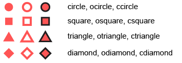

Generic method for adding user-defined glyphs. See details for more information about non-primitive and primitive glyphs.
l_glyph_add(widget, type, ...)
Arguments
| widget | widget path as a string or as an object handle |
|---|---|
| type | object used for method dispatch |
| ... | arguments passed on to method |
Value
String with glyph id. Every set of non-primitive glyphs has an id (character).
Details
The scatterplot and graph displays both have the n-dimensional state
'glyph' that assigns each data point or graph node a glyph (i.e. a
visual representation).
Loon distinguishes between primitive and non-primitive glyphs: the primitive glyphs are always available for use whereas the non-primitive glyphs need to be first specified and added to a plot before they can be used.
The primitive glyphs are:

The non-primitive glyph types and their creator functions are:

| Type | R creator function |
| Text | l_glyph_add_text |
| Serialaxes | l_glyph_add_serialaxes |
| Pointranges | l_glyph_add_pointrange |
| Images | l_glyph_add_image |
| Polygon | l_glyph_add_polygon |
When adding non-primitive glyphs to a display, the number of glyphs needs to
match the dimension n of the plot. In other words, a glyph needs to be
defined for each observations. See in the examples.
Currently loon does not support compound glyphs. However, it is possible to
cunstruct an arbitrary glyph using any system and save it as a png and then
re-import them as as image glyphs using l_glyph_add_image.
For more information run: l_help("learn_R_display_plot.html#glyphs")
See also
l_glyph_add_text, l_make_glyphs
Other glyph functions:
l_glyph_add.default(),
l_glyph_add_image(),
l_glyph_add_pointrange(),
l_glyph_add_polygon(),
l_glyph_add_serialaxes(),
l_glyph_add_text(),
l_glyph_delete(),
l_glyph_getLabel(),
l_glyph_getType(),
l_glyph_ids(),
l_glyph_relabel(),
l_primitiveGlyphs()
Examples
if(interactive()){ # Simple Example with Text Glyphs p <- with(olive, l_plot(stearic, eicosenoic, color=Region)) g <- l_glyph_add_text(p, text=olive$Area, label="Area") p['glyph'] <- g if (FALSE) { demo("l_glyphs", package="loon") } # create a plot that demonstrates the primitive glyphs and the text glyphs p <- l_plot(x=1:15, y=rep(0,15), size=10, showLabels=FALSE) text_glyph <- l_glyph_add_text(p, text=letters [1:15]) p['glyph'] <- c( 'circle', 'ocircle', 'ccircle', 'square', 'osquare' , 'csquare', 'triangle', 'otriangle', 'ctriangle', 'diamond', 'odiamond', 'cdiamond', rep(text_glyph, 3) ) }